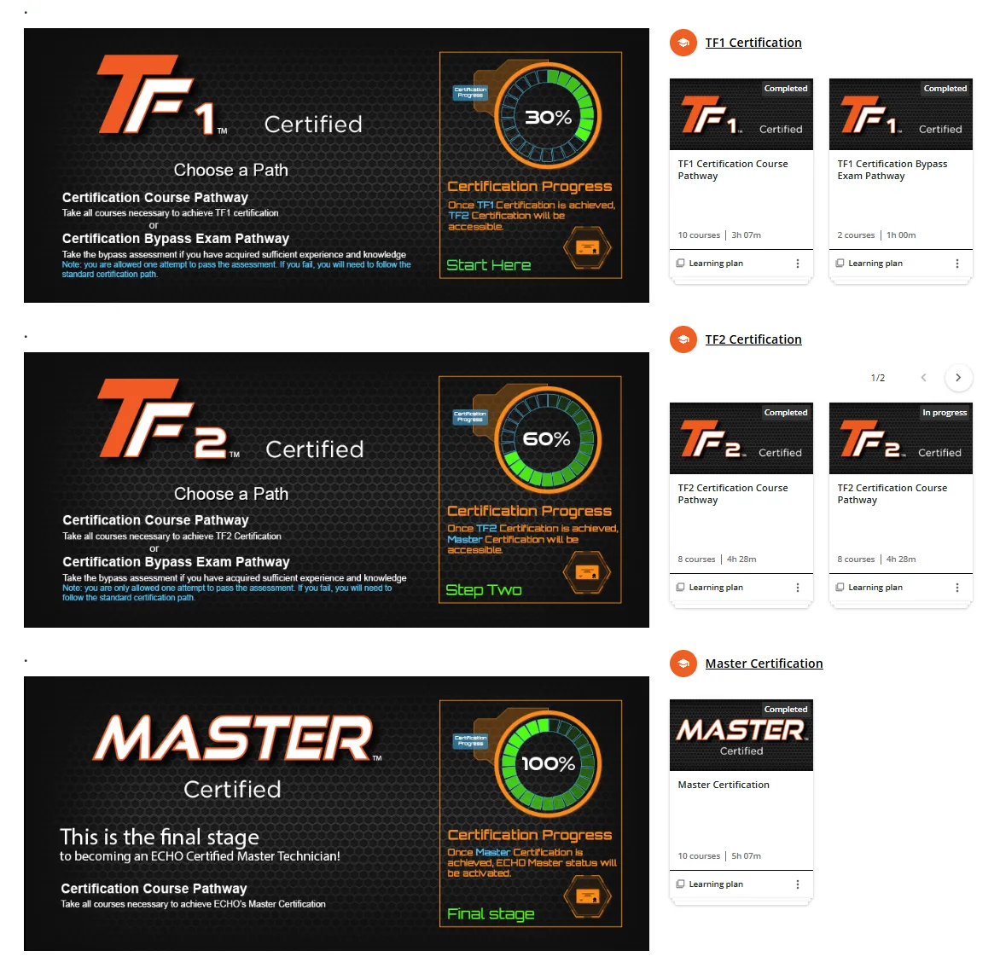

Technical Certification
A tiered progression system that supports both structured learning and assessment-based advancement for experienced technicians.

The problem
A certification system has to recognize two realities at once: newer technicians need structured learning progression, while experienced technicians may already possess the knowledge a standard pathway is designed to teach.
The architecture
TF1
Foundational certification with both a multi-course learning pathway and a bypass-exam route.
TF2
Advanced certification organized through audience-specific pathways and progression requirements.
Master
Final-stage certification representing the highest level in the structured technical pathway.
Scale
At the October 2026 snapshot, the TF1 standard pathway had 16,660 enrolled learners and the bypass pathway had 16,639. Master Certification had 1,259 enrolled learners with 797 completions, approximately 63%.
What this demonstrates
Certification architecture, learning-plan design, audience segmentation, assessment strategy, prerequisite logic, learner progression and reporting.
Download full case studyPortfolio note: screenshots and metrics are presented as dated examples of work and system scale. Public versions intentionally omit learner-list PII. Company trademarks and platform interfaces remain the property of their respective owners.
See how the pieces connect.
Explore the broader portfolio or use the career brief for a concise view of experience and role fit.